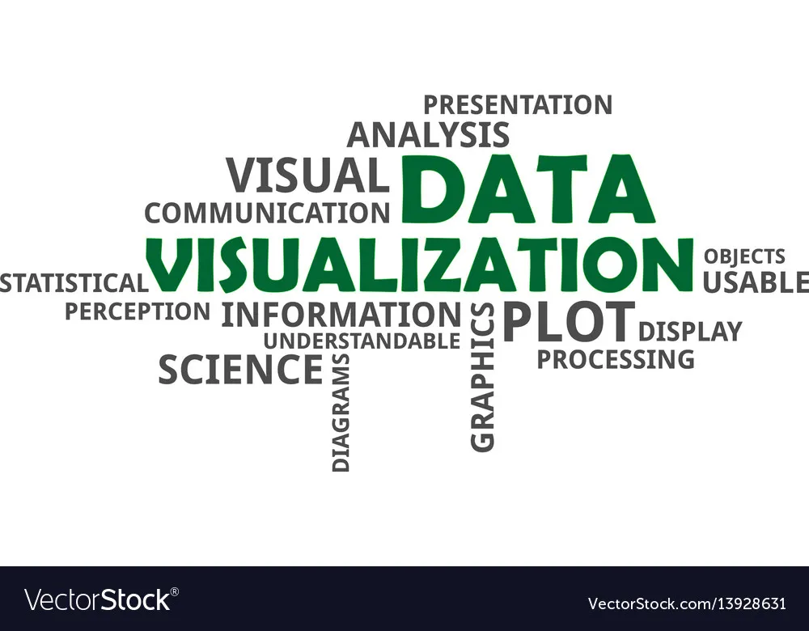

My Data Driven Artwork - Critical Reflection
The data driven artwork I have decided to use for my site, will take the form of a ‘Word Cloud’. Herein I will explain my reasoning behind this decision, as well what as what actually constitutes a word cloud, and why exactly that constitutes art.
DATA ART
“…artistic visualizations are visualizations of data done by artists with the intent of making art.”
(Viégas, et al. 2007, p.2)
First and foremost, perhaps an understanding of what Data Art actually is, should be shown. The above quote succinctly brings us to such an understanding. Data art, must therefore rely on data, and visualize that data with the intent of producing art. This is not art produced as a by-product of data visualization. It is art produced through data viz with the deliberate intention of creating art. All this is, naturally, performed by an artist. Or one perpetrating as such.
The quoted paper goes on to state that the artworks rendered must be based on actual data. (Viégas, et al. 2007, p.) It is, after all, data driven artwork. Any decisions made by the artist, which detract from the data, and rely on, highly artistic perhaps, superficial visualizations will therefore stray from the category of data art.
Another point the paper brings up is one of beauty. To summarise their point: beauty does not necessarily constitute art, and art does not necessarily have to be beautiful. This ties in with intent. A scientific visualization, which may be beautiful, cannot constitute art as the intention for art was not present at its genesis.
WORD CLOUD
A word cloud refers to visual representation of (word) data. It appears in the form of a cluster of words, of varying size and boldness. An example:
The choice of words, in a data art context, is obviously not arbitrary. It is often used to portray data such as the most common passwords, or most common names, with the number one most common being the thickest and biggest word in the cloud.
This again, is not arbitrary. The varying weight and size of the font, depend on its importance, or rank in the data. Words of higher importance or of a higher rank in the data set are given more space worthy of their ‘status’ in the ‘word hierarchy’. This naturally leads to resentment amongst the smaller words, which often leads to bloody revolution in an attempt to overthrow the… no, wait that’s a different story.
How exactly this constitutes data art, is due, as previously discussed, to the intention. It is also heavily featured on data art websites and while it may not be the most visually impressive, I find it to be quite arresting and also effective for my purposes.
HEAD IN THE WORD CLOUD
The reason I am choosing a word cloud visualization for my data driven artwork, is because as well as being able to represent my data, it will also be interactive and provide some benefit to the user.
The data my word cloud represents is the titles of the 250 best movies as per IMDb. The ‘words’ will be the titles of each movie, ordered according to the position they appear in the list. The bigger and bolder the title, the higher the movie is on the list. I believe this is effective as the user will easily be able to determine the importance of the film in relation to the size of its title. This will give them a quick breakdown of the cinematic standings of these films, at a glance.
There is also, the inexplicable allure of a cluster of recognizable entities, grouped almost randomly, in a way that is almost counterproductive to actually perusing these entities. It is the same principles in play with collages, and those superhero wallpapers featuring a large number of recognizable characters. The users eyes are torn, between being drawn to the largest and therefore most impressive entity (as per the principles of information hierarchies) and being drawn to the most recognizable.
As for the second reason, the interactivity I hope to offer the user, each word in the cloud will be a clickable link which will lead to the google page of the movie.
In this way, users will not only be able to see which movies are the best as per the list, but can also immediately find out more about the movie, in an attempt to determine whether or not they would want to watch it. I considered placing a link to a site where users could purchase the movie, but people don’t really buy movies anymore. (Aaarghh maties)
This data driven artwork, as per the definition of offered, is indeed a data driven artwork. Made with the intention of art, using data in a way that would not be regarded as superficial, and made by an artist (or one perpetrating as such at least). I believe it is effective in rounding out the website, as it will achieve a core intention of the site; to drive people to watch, or at least show interest in, movies which can be hailed as great works of art. It is, in essence, a work of art, celebrating works of art.
That is not to say that word cloud are without fault. They have been highly criticized in two regards, concerning accuracy on both accounts. ‘Readers struggle to translate word size to an accurate frequency’ is one of the criticisms. ‘Longer words create a bias, being made up of more letters, and thus taking more space’ is another.
While this may be true if data sets are solely represented through word cloud, I believe that a word cloud as an appendage to a website that already features other data viz in the form of bar graphs is an effective and even welcome supplement to the more tedious appearing data viz on the site. The effect is yet to be seen.